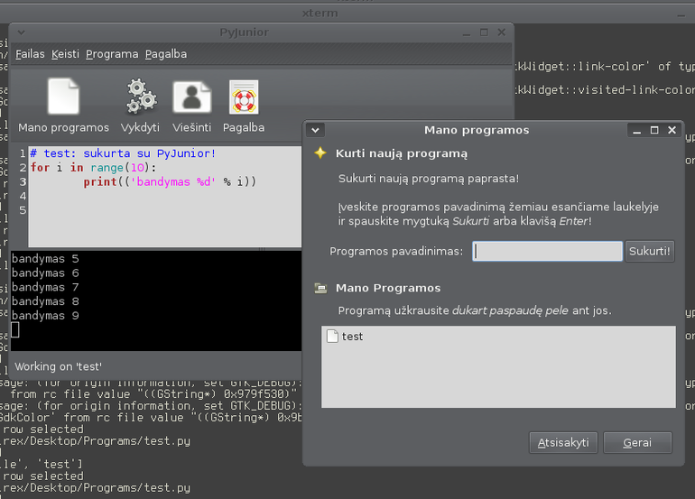

PyJunior
Užtikau Jono Bacon, žmogaus atsakingo už Ubuntu bendruomenės reikalus, įrašą apie PyJunior. Sudomino, įsidiegiau, išbandžiau, išverčiau į Lietuvių kalbą ir nusprendžiau pasidalinti šiuo atradimu.
Pirmiausia, štai kaip atrodo pati programa, su lietuvišku vertimu:
{kind=link}
PyJunior yra programa skirta Python mokymuisi. Nors Jono šią programą skiria vaikams, bet manau ji gali būti naudinga ne tik vaikams, bet visiems norintiems išmokti Python.
Programą Jono parašė per kelias valandas, bet pradžia gera ir programą jau galima naudoti, ji sėkmingai atlieka savo paskirtį. Įtariu Jono tinklaraštį seka gan daug žmonių, tai programa jau spėjo sulaukti pagalbos iš kitų programuotojų. Taip, pat programa jau išversta į Lietuvių ir Lenkų kalbas. Nors programa pradėta kurti vos prieš dvi dienas, bet jau sulaukė dėmesio ir nuveikta gan nemažai – (the open source power! :)).
PyJunior leidžia lengvai kurti Python programas, visos programos pateikiamos bendrame sąraše, todėl nereikia dirbti su failais. Iš sąrašo akimirksniu galima atverti pasirinktą savo programą ir ją įvykdyti, pataisyti ir vėl vykdyti. Jei greitai reikia kažką patestuoti, PyJunior puikiai tam tinka.
Pats PyJunior taip pat parašytas su Python. Dažniausiai dideli, ilgą laiką vystomi projektai yra sudėtingi. Šiuo atveju, PyJunior yra vos kelių dienų amžius, todėl visi norintys išmokti Python gali studijuoti kol kas nedidelės apimties PyJunior kodą, jį tobulinti, patobulinimus siūlyti Jono. Trumpai tariant, tai puiki vieta įsilieti į atviro kodo bendruomenę.
Kol kas nėra jokio PyJunior Ubuntu paketo, taip pat nėra ir Archlinux paketo, todėl norint išbandyti programą, teks tai daryti rankiniu būdu. Pasileidau virtualenv aplinka ir sutvarkius visas priklausomybes paleidau.
Štai trumpos instrukcijos, kaip paleisti:
$ virtualenv pyjunior && cd pyjunior $ mkdir src && cd src $ bzr branch lp:python-distutils-extra $ ../bin/easy_install --find-links . python-distutils-extra $ ../bin/easy_install CouchDB $ bzr branch lp:desktopcouch $ sed -ri 's/\/(usr|etc)\//\1\//g' desktopcouch/setup.py $ ../bin/easy_install --find-links . desktopcouch $ ../bin/easy_install oauth $ bzr branch lp:pyjunior $ cd pyjunior $ ../../bin/python setup.py install $ ../.. $ ./bin/pyjunior``
Prieš tai, naudojantis savo distribucijos paketų sistema reikia įsidiegti couchdb paketą.